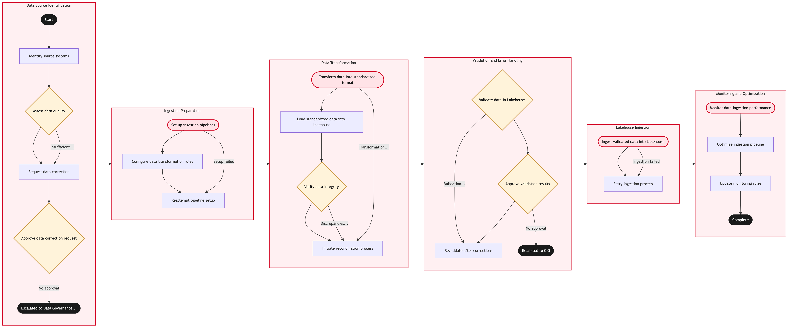

Updated 2026-08-21
Source System Ingestion to the Lakehouse
Process flow
Click to zoom

Process steps
▼
Phase 1 — Data Source Identification
4 steps
| Step | Activity | Role | System | Input | Output | KPI | Dec | Exc | Pain point |
|---|---|---|---|---|---|---|---|---|---|
| 1.1 | Identify source systems | Data Engineer | UNKNOWN (Integration Platform)U | None | List of source systems | Time to identify all sources < 2 hours | N | N | Complexity in identifying and documenting all relevant data sources. |
| 1.2 | Assess data quality | Data Quality Analyst | UNKNOWN (Integration Platform)U | Source system data | Data quality report | Time to assess < 1 hour | Y | N | Inconsistent data formats and missing values across sources. |
| 1.3 | Request data correction | Data Engineer | ITSM Platform (UNKNOWN)U | Data quality report | Corrected data | Time to correct < 2 days | N | N | Coordination with source system owners for data corrections. |
| 1.4 | Approve data correction request | YYZ Operations Control Duty Manager | ITSM Platform (UNKNOWN)U | Data correction request | Approval | Time to approve < 1 day | Y | N | Delays in obtaining management approval for data corrections. |
▼
Phase 2 — Ingestion Preparation
3 steps
| Step | Activity | Role | System | Input | Output | KPI | Dec | Exc | Pain point |
|---|---|---|---|---|---|---|---|---|---|
| 2.1 | Set up ingestion pipelines | Data Engineer | Integration Platform (UNKNOWN)U | Source system metadata | Pipeline configuration | Time to set up < 4 hours | N | Y | Technical issues with the integration platform causing pipeline setup failures. |
| 2.2 | Configure data transformation rules | Data Engineer | Databricks Lakehouse (Databricks)U | Pipeline configuration | Transformation scripts | Time to configure < 2 days | N | N | Complex transformations require extensive scripting. |
| 2.3 | Reattempt pipeline setup | Data Engineer | Integration Platform (UNKNOWN)U | Pipeline configuration and error logs | Successful pipeline setup | Time to retry < 1 hour | N | N | Need for quick troubleshooting and retries in case of integration failures. |
▼
Phase 3 — Data Transformation
4 steps
| Step | Activity | Role | System | Input | Output | KPI | Dec | Exc | Pain point |
|---|---|---|---|---|---|---|---|---|---|
| 3.1 | Transform data into standardized format | Data Engineer | Databricks Lakehouse (Databricks)U | Raw data | Standardized data | Time to transform < 2 hours | N | Y | Transformation scripts may fail due to unexpected data patterns. |
| 3.2 | Load standardized data into Lakehouse | Data Engineer | Databricks Lakehouse (Databricks)U | Standardized data | Loaded data | Time to load < 1 hour | N | N | Network latency affecting data load speed. |
| 3.3 | Verify data integrity | Data Quality Analyst | Databricks Lakehouse (Databricks)U | Loaded data | Integrity check report | Time to verify < 30 minutes | Y | N | Potential discrepancies between source and loaded data. |
| 3.4 | Initiate reconciliation process | Data Engineer | Databricks Lakehouse (Databricks)U | Integrity check report | Reconciled data | Time to reconcile < 2 days | N | N | Manual intervention required for complex reconciliations. |
▼
Phase 4 — Validation and Error Handling
3 steps
| Step | Activity | Role | System | Input | Output | KPI | Dec | Exc | Pain point |
|---|---|---|---|---|---|---|---|---|---|
| 4.1 | Validate data in Lakehouse | Data Quality Analyst | Databricks Lakehouse (Databricks)U | Reconciled data | Validation report | Time to validate < 2 hours | Y | N | Validation may fail due to unexpected anomalies. |
| 4.2 | Approve validation results | Data Governance Committee Member | UNKNOWN (Integration Platform)U | Validation report | Approval | Time to approve < 1 day | Y | N | Need for committee approval before data can be used. |
| 4.3 | Revalidate after corrections | Data Quality Analyst | Databricks Lakehouse (Databricks)U | Corrected data | Final validation report | Time to revalidate < 1 hour | N | N | Additional time required for revalidation after corrections. |
▼
Phase 5 — Lakehouse Ingestion
2 steps
| Step | Activity | Role | System | Input | Output | KPI | Dec | Exc | Pain point |
|---|---|---|---|---|---|---|---|---|---|
| 5.1 | Ingest validated data into Lakehouse | Data Engineer | Databricks Lakehouse (Databricks)U | Final validation report | Ingested data | Time to ingest < 30 minutes | N | Y | Potential ingestion failures due to technical issues. |
| 5.2 | Retry ingestion process | Data Engineer | Databricks Lakehouse (Databricks)U | Final validation report and error logs | Successful ingestion | Time to retry < 1 hour | N | N | Need for quick resolution of technical issues. |
▼
Phase 6 — Monitoring and Optimization
3 steps
| Step | Activity | Role | System | Input | Output | KPI | Dec | Exc | Pain point |
|---|---|---|---|---|---|---|---|---|---|
| 6.1 | Monitor data ingestion performance | Data Engineer | Databricks Lakehouse (Databricks)U | Ingested data | Performance metrics | Response time < 5 seconds | N | Y | Performance degradation due to high volume of data. |
| 6.2 | Optimize ingestion pipeline | Data Engineer | Integration Platform (UNKNOWN)U | Performance metrics | Optimized pipeline configuration | Time to optimize < 1 day | N | N | Complexity in optimizing for both performance and data integrity. |
| 6.3 | Update monitoring rules | Data Engineer | Databricks Lakehouse (Databricks)U | Optimized pipeline configuration | Updated monitoring rules | Time to update < 1 hour | N | N | Need for timely updates to ensure continuous performance monitoring. |
Swim lanes
Data Engineer1.1 1.3 2.1 2.2 2.3 3.1 3.2 3.4 5.1 5.2 6.1 6.2 6.3
Data Quality Analyst1.2 3.3 4.1 4.3
YYZ Operations Control Duty Manager1.4
Data Governance Committee Member4.2
Systems touched
UNKNOWN (Integration Platform)UITSM Platform (UNKNOWN)UIntegration Platform (UNKNOWN)UDatabricks Lakehouse (Databricks)U
Key performance indicators
- Data ingestion time < 24 hours
- Data transformation accuracy > 95%
- Validation pass rate > 98%
- Ingestion retry attempts < 3
- Monitoring alert response time < 10 minutes
Risks and control points
- Integration platform failures impacting data ingestion
- Source system data quality issues leading to rejections
- Data transformation errors causing downstream disruptions
- Validation failures due to unexpected anomalies
- Performance degradation under high data volume loads
Air Canada Process Wiki — process and systems reference compiled from public sources
for IT Application Management and User Support pre-sales discovery.
Built 2026-08-21. Every system carries an evidence tier: tier C is an industry pattern and tier U is an open
question, and neither should be asserted as fact about Air Canada without confirmation in discovery.
Not affiliated with or endorsed by Air Canada. Air Canada, Aeroplan and Altitude are trademarks of Air Canada.